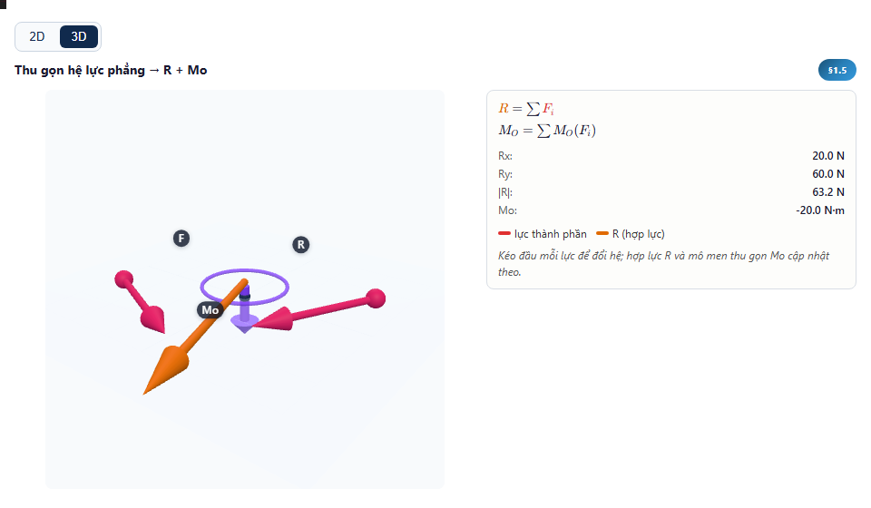
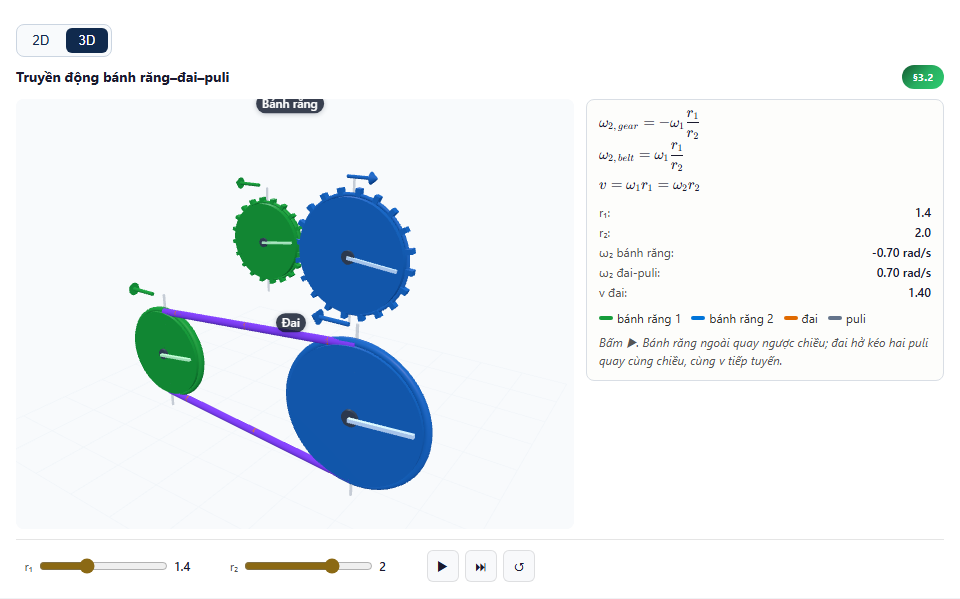
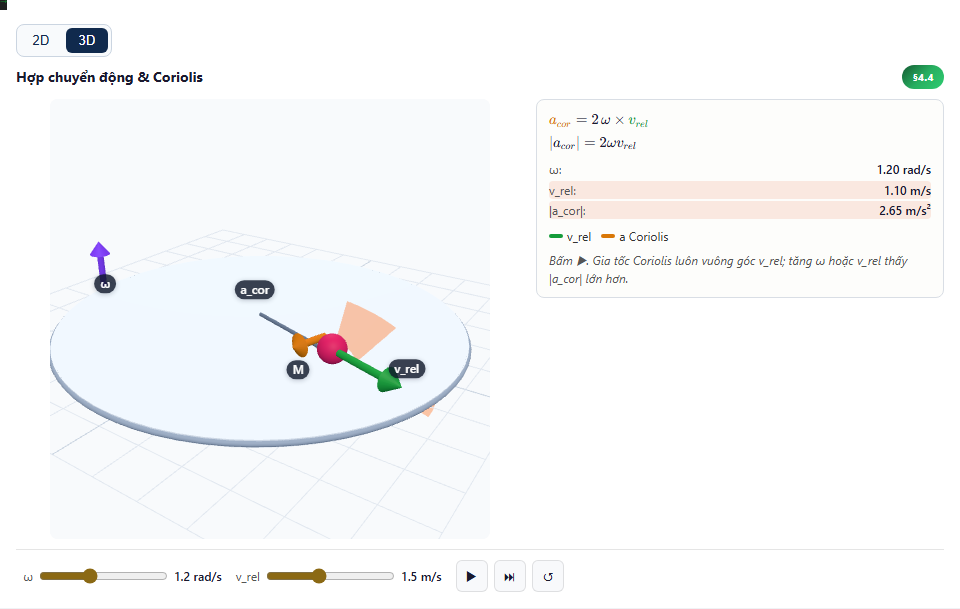
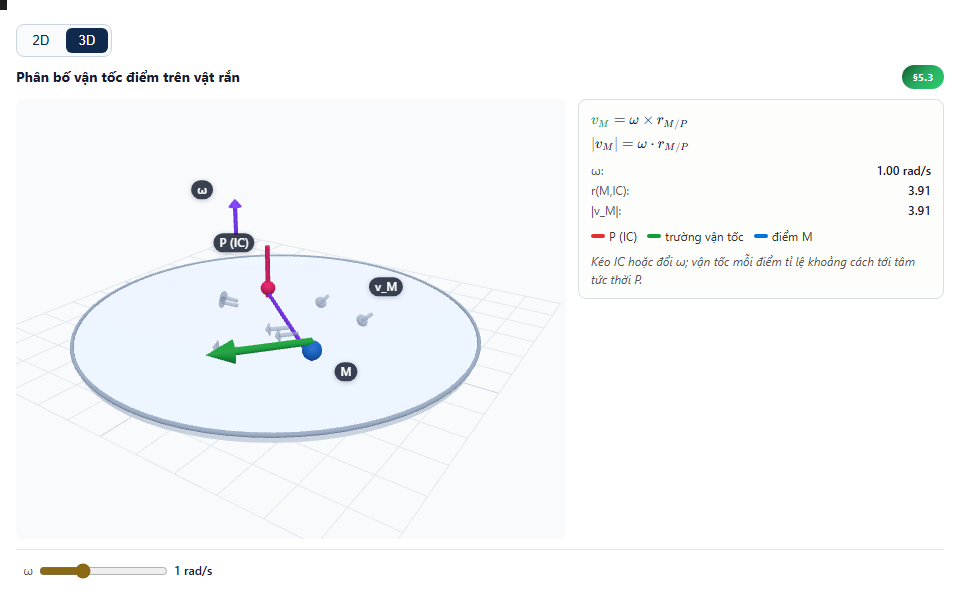
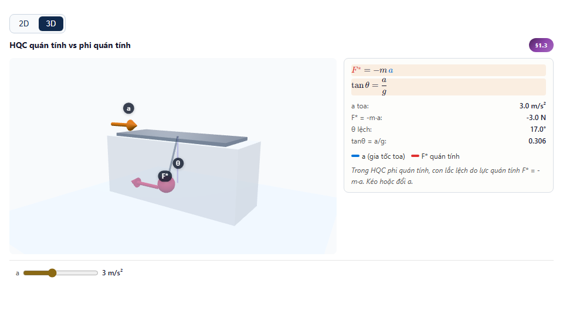
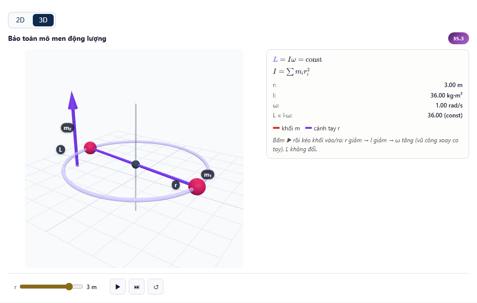

§1.5ch1-1-5target-polishThu gọn hệ lực phẳng → R + Mooverlap=0safeCrop=true margin=76pxcue=force-system-resultant-momentfill=0.63labels=3R-ratio=1.13R-role=functional-resultant-not-decorationR-decorative=lowpolished-target

final target audit
§5.3ch1-5-3sim3Nón ma sát trên mặt nghiêngoverlap=0safeCrop=not-measuredreference
§3.2ch2-3-2target-polishTruyền động bánh răng–đai–pulioverlap=0safeCrop=true margin=50pxcue=gear-contact-belt-transferfill=0.64labels=2beltLabel=belt-spanbeltSpan=0.72faceCover=0.04polished-target

final target audit
§4.4ch2-4-4sim3Hợp chuyển động & Coriolisoverlap=0safeCrop=not-measuredreference

final audit
§5.3ch2-5-3sim3Phân bố vận tốc điểm trên vật rắnoverlap=0safeCrop=not-measuredreference

final audit
Chương 3
§1.3ch3-1-3sim3HQC quán tính vs phi quán tínhoverlap=0safeCrop=not-measuredreference

final audit
§5.3ch3-5-3sim3Bảo toàn mô men động lượngoverlap=0safeCrop=not-measuredreference

final audit
§6.2ch3-6-2target-polishVa chạm với hệ số phục hồi eoverlap=0safeCrop=true margin=62pxcue=before-impact-after-lanefill=0.44labels=3noGhostTrail=trueghostCount=0trailDots=0polished-target